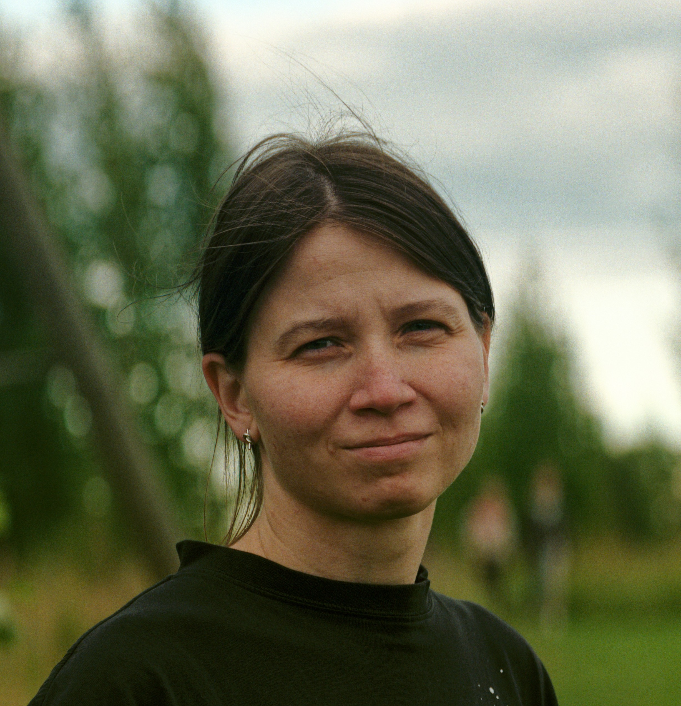

| УЧАСТНИКИ | АНКЕТА | МАТЕРИАЛЫ | ДОКЛАДЫ | ПУБЛИКАЦИИ | КОНТАКТЫ |
| Участники проекта |
|---|
|
А. В. Циммерлинг Руководитель проекта Гос ИРЯ им. А. С. Пушкина/Институт языкознания РАН ORCID: 0000-0002-5996-2648 ResearcherID: R-3342-2016 Scopus AuthorID: 56200095000 Область исследований в рамках проекта: Синтаксическая типология, русская грамматика, германские языки |
|
Е. Ю. Иванова Главный научный сотрудник СПбГУ/ГИРЯ ORCID: 0000-0002-1604-0088 ResearcherID: D-8060-2014 Scopus AuthorID: 56496302100 Область исследований в рамках проекта: болгарский язык, южнославянские языки, малые клаузы, внешний посессор, стратегии комплементации, полипредикация, семантический синтаксис, типология предикатов |
|
Г. И. Кустова Главный научный сотрудник Институт русского языка имени В. В. Виноградова РАН / ГИРЯ ORCID: 0000-0001-9404-081X ResearcherID: N-9024-2014 Scopus AuthorID: 56291947100 Область исследований в рамках проекта: Грамматическая семантика, семантико-синтаксический интерфейс |
|
С. А. Оскольская Ведущий научный сотрудник  НИУ ВШЭ/ГИРЯ SPIN РИНЦ: 4268-6750 ORCID: 0000-0001-8658-2133 ResearcherID: P-4529-2015 Scopus AuthorID: 57191727928 Область исследований в рамках проекта: нанайский язык, тунгусо-маньчжурские языки, конструкции с сентенциальным актантом, полипредикативные конструкции, индексикальный сдвиг |
|
В. Ю. Гусев Ведущий научный сотрудник Институт языкознания РАН /ГИРЯ SPIN РИНЦ: 2128-8120 ORCID: 0009-0004-3729-5807 ResearcherID: G-9499-2018 Scopus AuthorID: 57198810867 Область исследований в рамках проекта: нганасанский язык, самодийские языки, конструкции императивной зоны, корпуса малых языков |
|
А. М. Баюк (Ивойлова) Научный сотрудник ГИРЯ им. А. С. Пушкина ORCID: 0009-0002-6721-0005 Scopus AuthorID: 57447022900 Область исследований в рамках проекта: создание аннотированных корпусов, автоматическая лингвистическая разметка, научное программирование |
|
Ю. В. Синицына Научный сотрудник ГИРЯ/МГУ им. М. В. Ломоносова SPIN РИНЦ: 2597-3250 ORCID: 0000-0002-2408-6270 ResearcherID: HGD-5556-2022 Scopus AuthorID: 57559885700 Область исследований в рамках проекта: удмуртский язык, финно-угорские языки, полипредикация, предикаты со значением ‘казаться’ |
|
И. В. Калякин Младший научный сотрудник РГГУ/ГИРЯ SPIN РИНЦ: 9047-0060 ORCID: 0009-0002-8809-8913 ResearcherID: ITW-1227-2023 Scopus AuthorID: 58452221400 Область исследований в рамках проекта: нахско-дагестанские языки, даргинские языки, полипредикация, дистантное согласование, реструктурирование, сложная предикация |
|
П. Н. Астафьев Инженер ГИРЯ им. А. С. Пушкина ORCID: 0009-0009-7305-6252 Область исследований в рамках проекта: абхазо-адыгские языки, анафора, лицензирование местоимений через границу клаузы |
|
Д. А. Парамонова Инженер ГИРЯ/МГУ им. М. В. Ломоносова SPIN РИНЦ: 3166-5815 Область исследований в рамках проекта: тюркские языки, северо-кавказские языки, структурная асимметрия |
Государственный институт русского языка им. А. С. Пушкина
Грант РНФ № 25-18-00222